Designed by architect William G. Robinson, Ledyard is a four-story yellow brick Italianate building trimmed in Ionia sandstone, standing at the corner of Ottawa & Pearl for a century and a half.
Ledyard was built for William B. Ledyard, a Grand Rapids banker. His name has stayed on the building's cornice for 150 years.
In 1983, Ledyard was listed on the National Register of Historic Places as part of the Ledyard Block Historic District — one of the few 19th-century commercial buildings downtown still standing and still in use.
From the beginning, Ledyard was built with retail on the ground floor and living quarters on the floors above.
After 150 years, that original use is coming back. CWD Real Estate Investment is bringing residential living back to Ledyard's upper floors — the same way the building has always worked.
cwdrealestate.com/great-spaces/the-ledyard-building